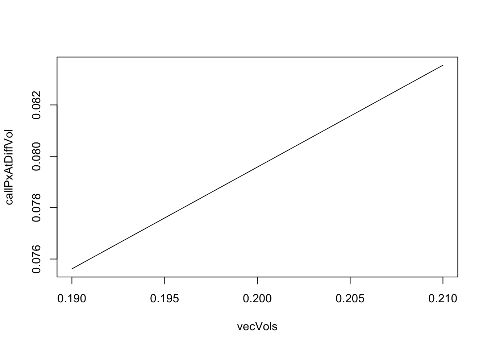
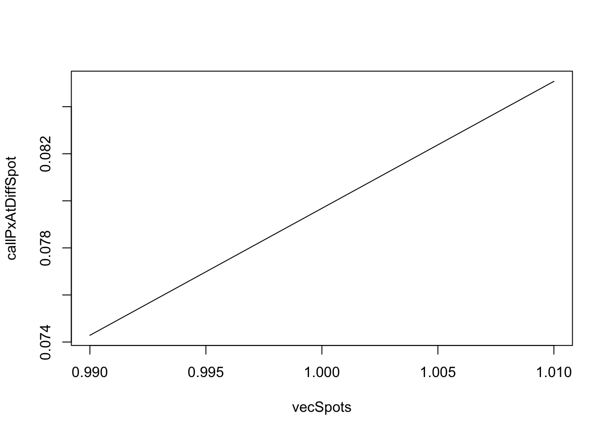

Chapter 4 Sensitivity
In Chapter 3 we tried to obtain an expected price of products. In this chapter we want to understand the sensitivities of these expectations. For example, when one particular variable changes, what is the effect it would have on the expectation.
In finance speak, when the variable is the spot price, this sensitivity is called the Delta. Another variable of interest is the sensitivity to volatility (which is called Vega). Some people are not fans of technical terms so we prefer to call the sensitivities the change in expected price due to a change in some variable.
In practice, exotic payoffs cannot be solved by closed-form formulas, so the method of partial differentiation is generally not applicable in obtaining the sensitivities.
Here we look at methods of finite difference approximation since they are easy to understand and implement. Several types of finite differencing approximations are available - forward difference, backward difference, and central difference.
Suppose the variable of interest is \(\theta\) and it changes by amount \(h\). The expected price at a particular value of this variable can be represented as \(F(\theta)\), the forward difference \(\Delta_{F}\) is computed as such:
\[ \Delta_{F} = \frac{\bar F(\theta + h) - \bar F(\theta)}{h} \]
where \(\bar F(\theta + h)\) is the expected price of the payoff when the variable is \(\theta + h\).
The central difference \(C(\theta)\) is computed as such:
\[ \Delta_{C} = \frac{\bar C(\theta + h) - \bar C(\theta - h)}{2h} \]
where \(\bar C(\theta + h)\) is the expected price of the payoff when the variable is to \(\theta + h\).
4.1 Vol
call_px(aSpot = 1, aVol = 0.2)## [1] 0.07958281vecVols = c(0.19, 0.21)
callPxAtDiffVol = c(call_px(aSpot = 1, aVol = vecVols[1]),
call_px(aSpot = 1, aVol = vecVols[2]))
plot(vecVols, callPxAtDiffVol, type = "l")
# per 0.1% change in spot
call_vol = (callPxAtDiffVol[2] - callPxAtDiffVol[1])/2
call_vol * 100 # per 1% change## [1] 0.3964437fcn_px(aSpot = 1, aKO = 1.02, aVol = 0.3)## [1] -0.0395444vecVols = c(0.29, 0.31)
fcnPxAtDiffVol = c(fcn_px(aSpot = 1, aKO = 1.02, aVol = vecVols[1]),
fcn_px(aSpot = 1, aKO = 1.02, aVol = vecVols[2]))
fcn_vol = (fcnPxAtDiffVol[2] - fcnPxAtDiffVol[1])/2
fcn_vol * 100 # vega per 1 vol pt change## [1] -0.27598094.2 Spot
call_px(aSpot = 1, aStrike = 1)## [1] 0.07958281vecSpots = c(99, 101)/100
callPxAtDiffSpot = sapply(vecSpots, call_px, nsims = 10000)
plot(vecSpots, callPxAtDiffSpot, type = "l")
# per 0.1% change in spot
call_delta = (callPxAtDiffSpot[2] - callPxAtDiffSpot[1])/2
call_delta * 100 # per 1% change## [1] 0.5396399fcn_px(aSpot = 1, aKO = 1, aRate = 0)## [1] -0.03675524vecSpots = c(99, 101)/100
fcnPxAtDiffSpot = sapply(vecSpots, fcn_px, nsims = 10000, aKO = 1.02, aRate = 0)
#plot(vecSpots, fcnPxAtDiffSpot, type = "l")
# per 0.1% change in spot
fcn_delta = (fcnPxAtDiffSpot[2] - fcnPxAtDiffSpot[1])/2
fcn_delta * 100 # per 1% change in %## [1] 0.38603284.3 Correl
TODO